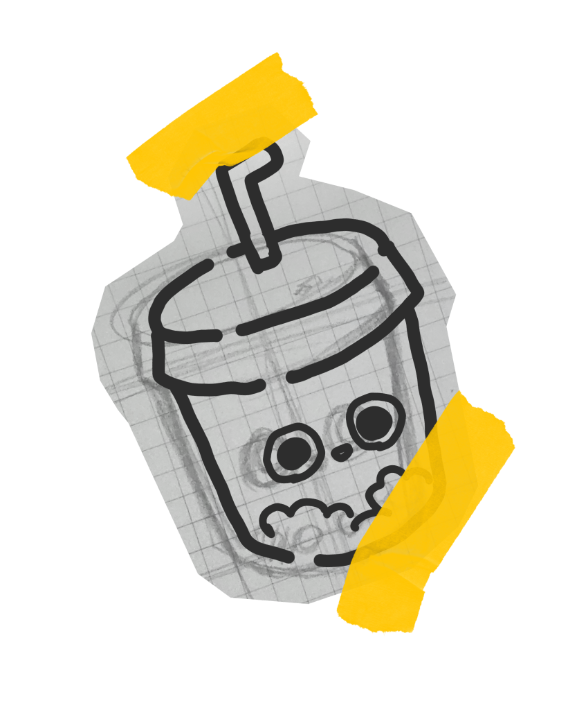
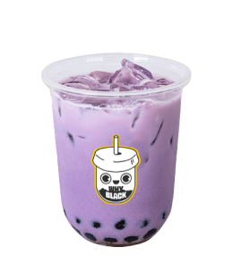

디저트와 버블티를 주력으로하며
사랑받는 브랜드로 나아가기 위해
노력하는
브랜드 ‘와이블랙’ 고유의 특징과 이념을
로고에 담아보았습니다.
I tried to include unique characteristics and philosophy
of the brand
‘Why Black’ , that specializes in dessert and bubble tea and strives to become a beloved dessert cafe brand, into the logo.
Personal Project
Project duration： 5 days
Tool：




![Problems with the 'Why Black' logo. The existing logo leans more toward feeling like a coffee focused shop rather than a dessert cafe, or it brings other social media images to mind first. Improvement direction. Keep the existing colors as much as possible while designing a logo that instantly conveys this is a dessert cafe centered on bubble tea and also reflects the brand's underlying philosophy.A brainstorming process is shown, and the keywords drawn from that process, sweetness, softness and simpleness, are listed right beside it. The design goal for this logo is to directly evoke bubble tea in customers's minds utilize simple curves. This shows a Why Black beverage cup representing the motif behind the logo redesign.](img/why_black/Desktop3.jpg)
![A character style redesigned logo sits above the sketches created during the logo design process. Beside it another variation of the redesigned text logo is presented. Color system. 'FEFEFE'. This slight bright black color gives a smooth and stable feeling with curved line. Moreover, it immediately reminds of the brand's name and a sense of familiarity to everyone. 'FECE05'. Intended to create a bright and friendly feeling with this bright and saturated yellow color that blends with the simplicity of black. Typographie. A round and thick stroke font resembling the tapioca pearls found in bubble tea, the shop's signature menu item, was used to reflect Why Black's identity as a dessert cafe.](img/why_black/Desktop4.jpg)